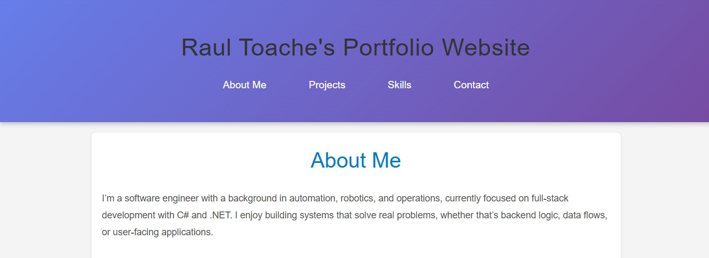
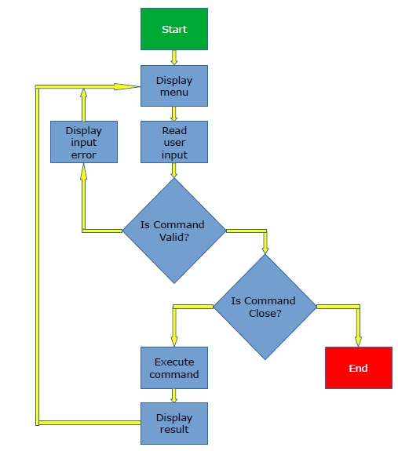

I’m a software engineer with a background in automation, robotics, and operations, currently focused on full-stack development with C# and .NET. I enjoy building systems that solve real problems, whether that’s backend logic, data flows, or user-facing applications.
My experience spans industrial automation software and modern web development, which gives me a pragmatic, systems-oriented approach to coding. I value clean architecture, maintainable code, and understanding why something is built—not just how.
I’m currently expanding my full-stack skills through Microsoft’s Full-Stack Developer certification, while exploring areas like cloud, DevOps, and IoT. I’m especially interested in projects where software meets the real world: automation, tools, and intelligent systems.
Projects
Portfolio Website

Responsive portfolio website
A responsive personal portfolio designed to present my background, skills, and projects in a clear and structured way.
The focus was on clean layout, accessibility, and maintainable front-end code.
Key Learning: Structuring content for readability and professional presentation
Library Management Tool (Console Application)
Console-based library management tool
A console-based application focused on managing a small library system, including book registration,
borrowing workflows, and search functionality. The project emphasized clean logic and structured program flow.
Tech: C#, .NET
Focus: Data structures, control flow, input validation
Key Learning: Designing reusable methods and maintaining application state
Inventory Tracking Tool (Console Application)

Inventory workflow diagram
A console application designed to manage inventory items and stock levels.
The goal was to model real-world inventory logic while keeping the application modular and easy to extend.
Tech: C#, .NET
Focus: Business logic, data handling, basic domain modeling
Key Learning: Translating real-world processes into structured code
Skills
Soft Skills
Problem Solving:
I approach problems methodically by breaking them into smaller components, identifying root causes, and validating solutions step by step.
Execution & Reliability:
I focus on delivering reliable, well-tested solutions through careful planning, consistent execution, and attention to detail.
Outcome-Oriented Thinking:
I prioritize solutions that produce measurable value and directly support project or business objectives.
Team Collaboration:
I work effectively within cross-functional teams, communicate clearly, and contribute to shared technical goals.
Business & System Awareness:
I understand how software fits into larger systems and business processes, and I align technical decisions with real-world constraints.
Hard Skills
C# & .NET:
Experience building desktop and web applications using modern C#, .NET, and related tooling.
Desktop Application Development:
Building Windows desktop applications using WPF and the MVVM pattern, with a focus on maintainable architecture and clear UI logic separation.
Full-Stack Web Development:
Developing full-stack web applications using ASP.NET Core, modern frontend practices, and RESTful APIs.
System & Workflow Design:
Designing state-driven workflows, process logic, and system interactions inspired by real-world automation and operational systems.
Data & Configuration Management:
Working with structured data, application configuration, and environment-specific settings to support scalable and maintainable systems.